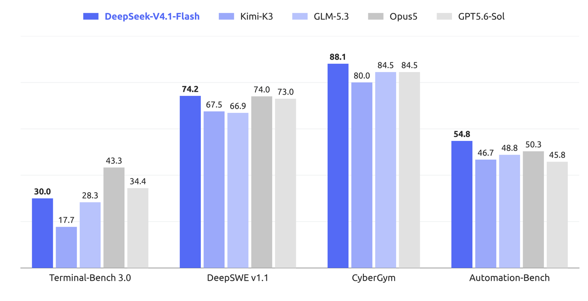

ChatGPT、Claude、Cursor、Midjourney… 主流 AI 工具的横向对比与深度评测。
9 月 10 日 DeepSeek 开源 V4.1-Flash：552B MoE，输入侧只激活 8B、输出侧 16B，100 万 Token 上下文。最狠的是内存账——全局 KV cache 从 V1 的 389,120 字节/Token 压到 890 字节/Token，缩小 437 倍，HBM 只要上一代的 1/4；缓存命中输入价降到 $0.003/百万 Token。Artificial Analysis 给 40 分、113 款模型排第 6，AutoBench 榜首超过 GPT-6 Astra。而北京时间 9 月 14 日 12:00 起，所有 deepseek-v4-pro 请求被强制路由到它——DeepSeek 用一次静默改道，替自家旗舰按下了退场键。
看今日完整快报 →
ChatGPT · Claude · Kimi · DeepSeek · Gemini
5 款工具对比 →Midjourney · DALL·E 3 · SD · Firefly · Recraft
5 款工具对比 →Cursor · Copilot · Windsurf · Codex · Claude Code
5 款工具对比 →Runway · Pika · Kling · Vidu
4 款工具对比 →ElevenLabs · Fish Audio · CosyVoice · Azure · OpenAI
5 款工具对比 →ChatGPT vs Claude 深度横评
阅读 →Cursor、Copilot、Windsurf、Codex CLI、Claude Code 全面对比。包含 12 个 FAQ、11 种场景决策矩阵和真实编码实战案例。
ElevenLabs、Fish Audio、CosyVoice、Azure TTS、OpenAI TTS 对比。包含盲听测试、方言专项评测和 9 场景决策矩阵。